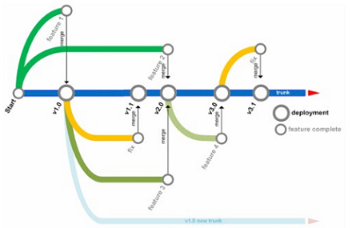
L'objectiu d'aquest CodeLab és utlitzar un Sistema de Control de Versions per a gestionar els nostres fitxers de codi.
Un Sistema de Control de Versions ens permetrà tenir sempre disponible el nostre codi, i gestionar els canvis que hi anem realitzant.
Inicia IntelliJ i crea un nou projecte anomenat "ControlVersions".
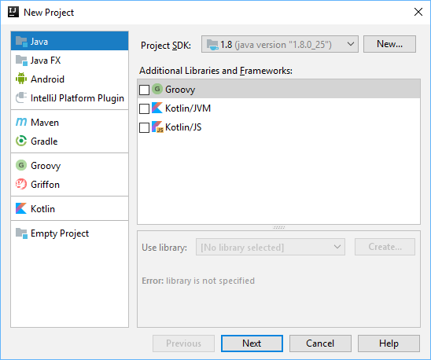
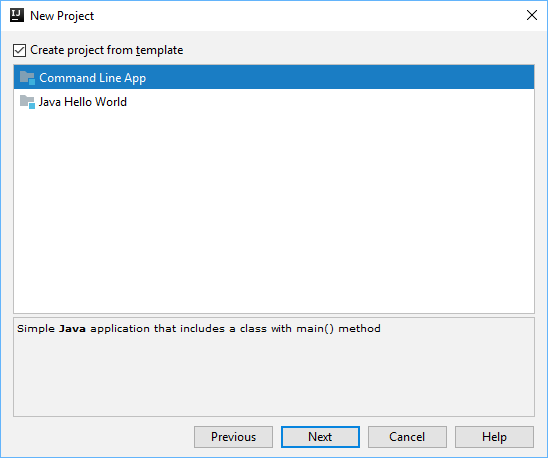
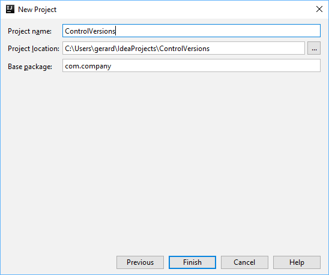
Utilitzarem un Sistema de Control de Versions al núvol, i d'aquesta manera tindrem disponible el nostre codi allà on anem.
Hi ha diverses opcions:
Totes elles ofereixen unes funcionalitats similars.
En aquest CodeLab utilitzarem Github. Si no tens un compte, crea-te'n un.
Instal·la git
Git és el programa que s'encarrega de comunicar el nostre ordinador amb Github, per a enviar els canvis que realitzem al codi, o descarregar el codi que tenim allà.
Descarrega i instal·la Git:
Amb Ubuntu:
Un cop creat el compte a GitHub i instal·lat git, ja podem compartir el nostre projecte a GitHub.
Per a fer-ho ves a

Es crearà un nou repositori de codi a GitHub per al teu projecte:
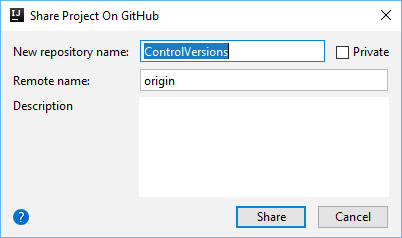
Et demanarà quins arxius vols pujar al repositori de codi:
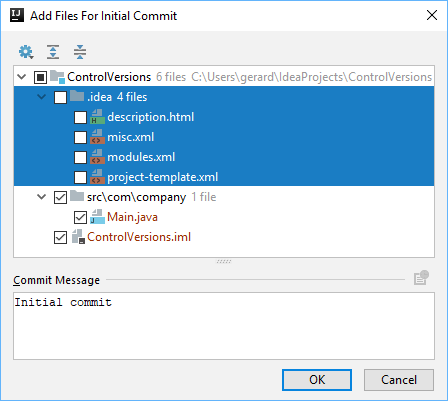
Un cop li hem donat a OK, el nostre codi es pujarà a GitHub.
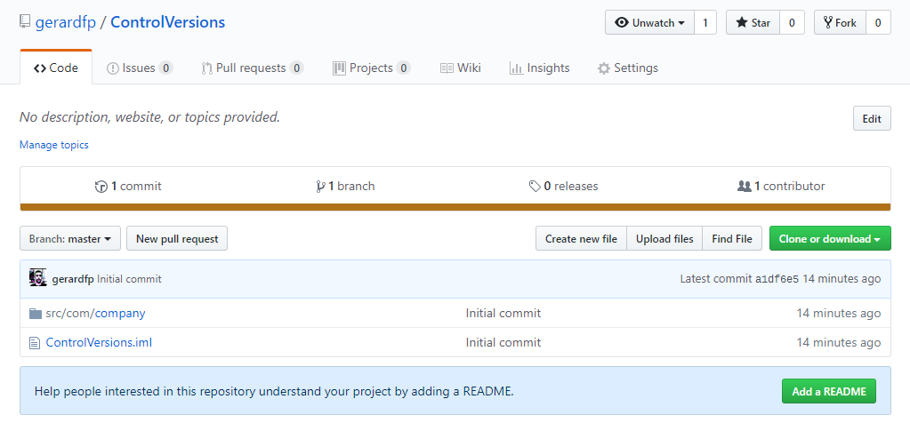
Quan realitzem canvis al nostre codi,
Hi ha tres operacions bàsiques que permet realitzar git:
commit: desa els canvis que hem realitzat al codi en l'ordinador local.
push: envia a GitHub els canvis que tenim desats al nostre ordinador.
pull: actualitza els canvis que hi ha a GitHub i encara no tenim al nostre ordinador.
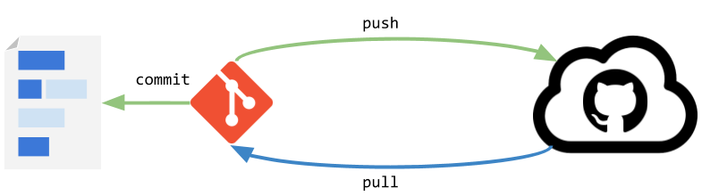
Realitza una modificació al codi i fes un "Commit & Push", per a enviar els canvis a GitHub.
public class Main { public static void main(String[] args) { System.out.println("git works"); } }
Un cop fet els canvis, fes click a la icona per a fer el "Commit & Push":
Descriu al "Commit Message" els canvis que has realitzat i clica "Commit & Push":
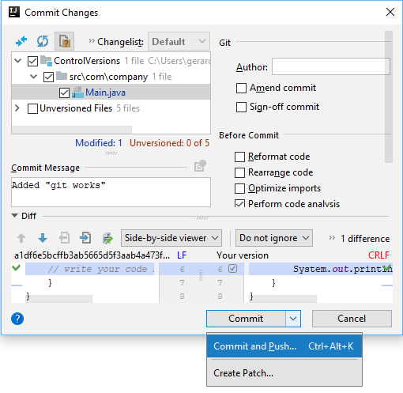
Ara que tenim el nostre projecte a GitHub podem clonar-lo en altres ordinadors i mantenir sempre sincronitzats el nostre codi.
Per a clonar un repositori anem a
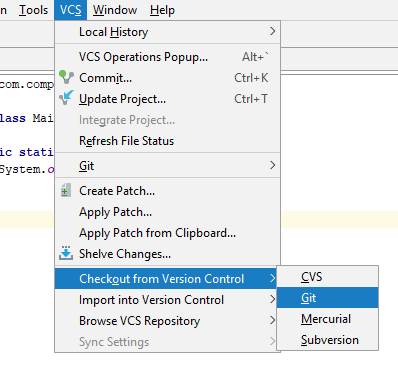
Ens demana la URL del repositori que volem clonar. Aquesta URL la trobarem a la pàgina principal del repositori a GitHub.
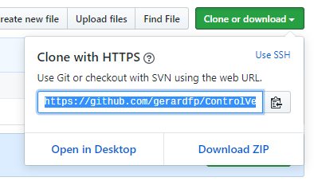
La copiem i l'enganxem. Especifiquem també el directori del nostre ordinador on volem clonar el projecte:
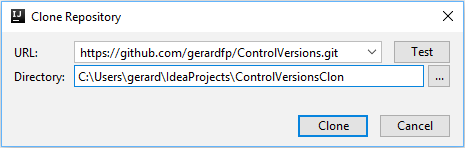
Ja tenim clonat el nostre repositori. Ara podem fer canvis i pujar-los a GitHub. Per a mantenir sempre actualitzades els diferents clons que puguem tenir en diferents ordinadors, cal sempre realitzar la operació Update.
Per a fer Update, fem click a la icona .
Un aspecte important de git és que gestiona els conflictes entre les diferents versions d'un mateix arxiu que puguem tenir en els diferents clons. Fem una prova.
Al projecte clonat (directori "ControlVersionsClon") realitza una modificació:
public class Main { public static void main(String[] args) { System.out.println("git works"); System.out.println("git rocks"); } }
Fes un Push dels canvis.
Ara torna al projecte originari (directori "ControlVersions") i fes una altre petita modificació:
public class Main { public static void main(String[] args) { System.out.println("git works"); System.out.println("git forever"); } }
Fes un Update.
En aquest punt, git detecta que al teu ordinador hi ha canvis al teu codi que no estan a GitHub, i que hi ha canvis a GitHub que no estan al teu codi. Per tant s'han de "mesclar" aquest canvis. Et mostra el següent diàleg per a que els mesclis:
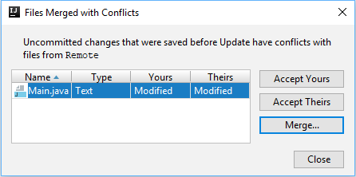
Fent clic a "Merge..." s'obrirà la següent finestra:
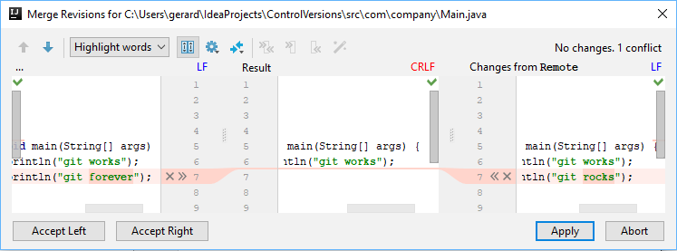
A l'esquerra apareixen el codi que tens al teu ordinador, a la dreta el codi que hi ha a GitHub, i al centre com vols que quedi la mescla dels dos codis:
Es tracta bàsicament d'anar fent clic a les creus o les flextetes per a afegir o eliminar el codi que desitjem.
Un cop estiguem satisfets amb la mescla, fem click a "Apply"